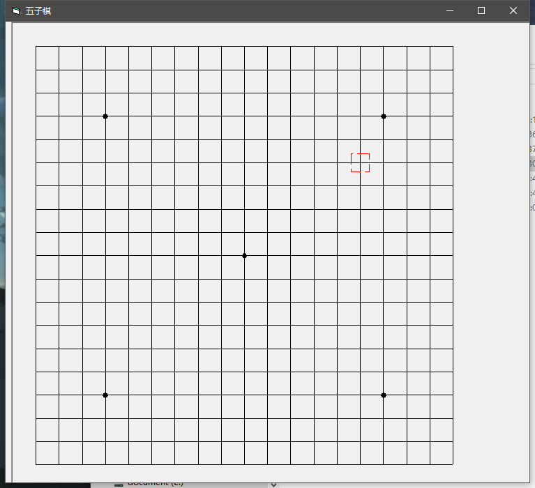
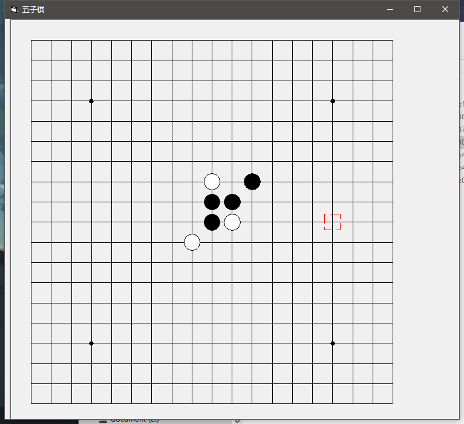
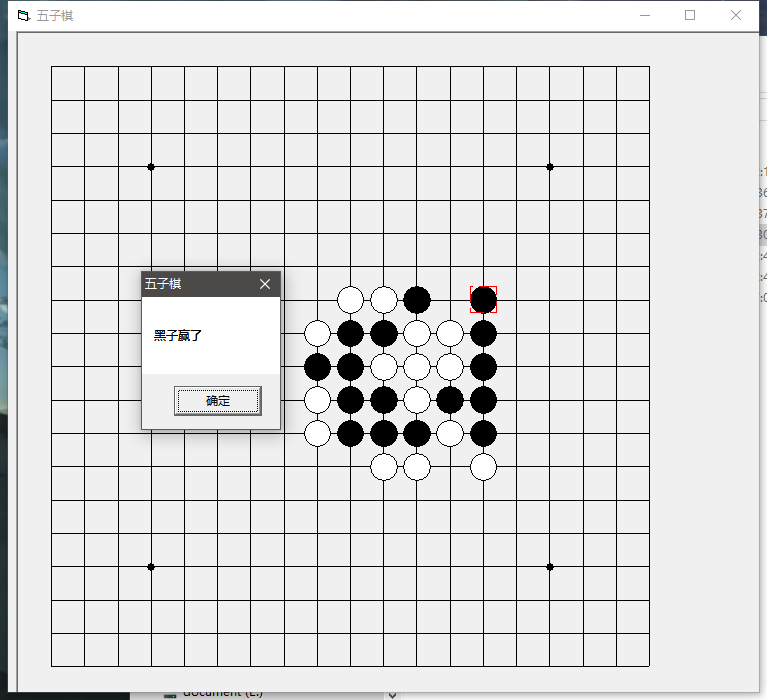

Introduction
Network Quantization
Incremental Network Quantization
Dynamic Network Surgery
Binary Weight Networks
Ternary Weight Networks
Trained Ternary Quantization
Binarized Neural Networks
Deep Compression
Integer Arithmetic Only Inference
Notes
Install and Use Gitbook on Windows
Softmax Loss with Different Differentiation Methods
PyTorch and Automatic Differentiation
Install Caffe2 on Windows
Markdown Tutorial
VSCode
Re-implementation of AuxNet
Git
Power Point
PyPlot
Fun
HelloWorldGame
基于CPLD的电梯仿真系统
基于MFC的五子棋
基于c++的表格设计v0
基于c++的表格设计v1
基于c++的表格设计v2
基于c++的表格设计v3
CPP扫雷游戏
MFC简易音乐播放器
基于VB的二次曲线
基于VB的五子棋
基于VB的李萨如图形
机器人瓦力
简易语音识别设备
Published with GitBook
基于VB的五子棋
Gobang
GitHub地址：
https://github.com/ICEORY/LearningVB/tree/master/gobang
功能说明：
绘制基本的棋盘
双人对战
自动判定胜负
效果展示



results matching "
"
No results matching "
"